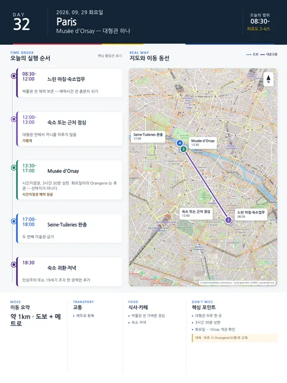

Day 32 · 9/29 화 · Paris
오늘의 주요 장소

- 핵심 실행
- Musée d’Orsay (화요일 — Orangerie 휴관)
- 권장 출발
- 예약 60분 전 출발
- 완충
- 관람 3시간 30분 상한
- 예약
- 이 날짜로 잡힌 예약 없음 · 현황
시간표
| 시간 | 일정 | 실행 포인트 |
|---|---|---|
| 08:30–10:00 | 느린 아침·카페 | 예약시간 전 충분히 쉬기 |
| 10:00–12:00 | 숙소업무·가벼운 산책 | 박물관 전 체력 보존 |
| 12:00–13:00 | 숙소 또는 근처 점심 | 대형관 안에서 끼니를 미루지 않음 |
| 13:30–17:00 | Musée d’Orsay | 시간지정권, 3시간 30분 상한. 화요일 개관 (월요일 휴관) |
| 17:00–18:00 | Seine 또는 Tuileries에서 완충 | 두 번째 미술관 금지 |
| 저녁 | 숙소식 또는 동네 저녁 | 고정행사 없음 |
피로도
3–4/5
이 날의 장소
일자별 시간표와 본문 표기에서 찾은 것이다. 하루의 전부가 아니라 장소 카드가 있는 것만 담는다.
이 날의 메모
Orsay — 대형관 하나만 보는 박물관 날 박물관
⚠ 이 날은 화요일이라 Orangerie 를 고를 수 없다. Musée de l’Orangerie 는 화요일 휴관이다 (공식 사이트, 2026-08-14 확인). 원고가 오래 "Orsay 또는 Orangerie 택1" 로 적어 두었지만 9/29 에는 선택지가 하나뿐이다. Orangerie 를 보고 싶으면 10/3 선택 문화일로 옮긴다 — 그날은 토요일이다.
Orsay를 택하면 인상주의 또는 19세기 조각 한 권역만 추가한다.
금지 규칙
- Orsay와 Orangerie를 같은 날 모두 보지 않는다. 9/29 에 Orangerie 는 휴관이라 애초에 불가능하다.
- 박물관 뒤에 야간공연이나 Fashion Week 비공개 쇼를 붙이지 않는다.
상세 실행 확인
- 최고 리스크
- 박물관 피로
- 우선 삭제
- 두 번째 미술관
- 대체안
- 관람 축소 후 Tuileries 산책
- 식사·휴식
- 관람 전 가벼운 점심
- 잠금 필요
- 미술관 시간지정
Google 실행지도
Musée d'Orsay — 시간지정권 오후 관람
지도 펼치기
지도는 펼칠 때만 불러옵니다.
Daily Action Map

실제 좌표와 OpenStreetMap을 사용한 실행용 요약입니다. 도로·대중교통 상황은 출발 직전에 다시 확인하세요.